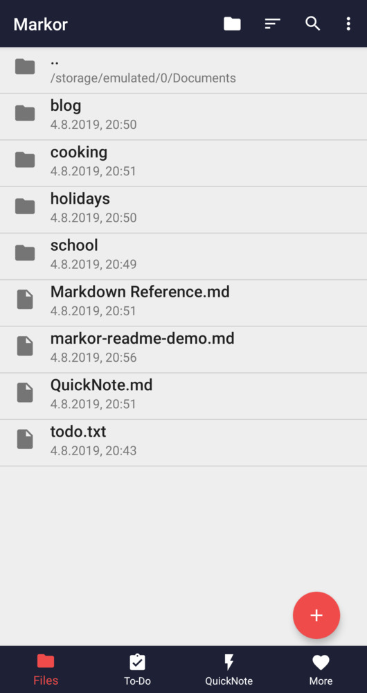
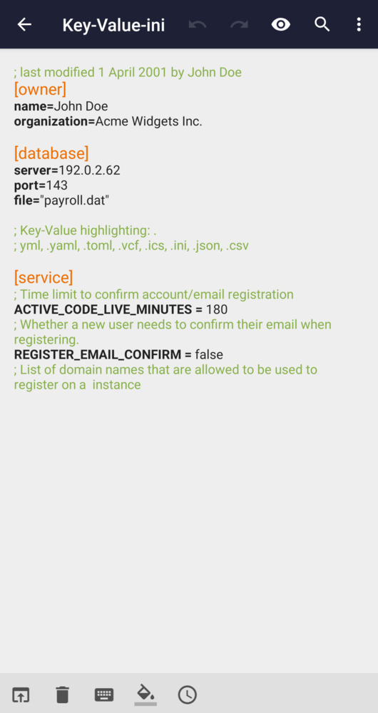

Markor 问答速查——手机上写 Markdown，这一份够用吗？
整理一组关于 Markor 的快问快答：它是什么、怎么装、核心功能有哪些、Share Into 怎么用、数学公式支持到什么程度、和 Obsidian 比差在哪——干脆不绕。
整理一组关于 Markor 的快问快答。Android 端写 Markdown 的工具不少，但真正把文件浏览、剪贴板桥接、多格式编辑、本地导出揉在一起的，Markor 是其中一个——先把读者真会问的问题逐个答了。

Markor 到底是什么？给谁用的？
一句话：Markor 是 Android 手机上的 Markdown / 纯文本编辑器，它的官网上有完整的功能清单和版本说明，但它不止编辑——自带文件浏览器、todo.txt 管理、KaTeX 数学公式、HTML/PDF 导出，还能把任何 App 里的文字一键丢进来。
谁该装：在手机上写笔记、做待办、整理链接、写技术文档的人。如果你只用手机看 Markdown 不写，或者只在桌面端写，那它不是必须。但如果你有「地铁上记点子」「把微信里朋友发的提醒快速转成待办」「在浏览器里看到好文章想存成 Markdown 链接」这些场景，Markor 会省掉很多复制粘贴的麻烦。
安装麻烦吗？去哪里下？
不麻烦。装包从它的官方下载拿，常规的 Android 安装流程，没有额外的框架依赖。首次打开会让你选一个「Notebook 根目录」——这个目录就是它所有文件浏览器、QuickNote、todo.txt 的工作区，选好之后不用改。
唯一需要注意：旧版本的 Markor 没有 Share Into 或者格式支持不全，直接装最新版就行。v2.10 之后加了 URL 跟踪参数自动清除，v2.12 之后加了 Snippets 模板和 KaTeX 参考模板，版本越新功能越齐。
核心功能到底有哪些？别吹，说实的
不说虚的，就说样本里实际覆盖到、日常真会用的：
- 文件浏览器：打开就是文件列表，支持新建（Markdown、AsciiDoc、Org-Mode、CSV、纯文本、todo.txt）、搜索、收藏文件夹、按格式过滤、批量删除，删了没有回收站，要小心。
- Share Into：任何 Android App 里选中文字点分享，就能直接丢进 Markor 的 QuickNote、ToDo、LinkBox 或者已有文件——后面单独展开说。
- Markdown 渲染：代码块高亮、表格、引用、图片、链接都正常，KaTeX 数学公式要手动开关。
- todo.txt 管理：自动识别 todo.txt 格式，勾选即完成，支持日期、优先级标签。
- 导出：HTML 本地打包（图片自动内联成 base64）、PDF 走 Android 系统打印服务，不依赖云。
- 多格式支持：除了 Markdown，还能编辑 AsciiDoc、Org-Mode、Zim Wiki，一个 App 当好几个用。
Share Into 怎么玩？这是它家独有的吗？
它不是 Markor 里的按钮，是 Android 系统级的分享通道。 任何 App 里长按文字或者点分享图标，弹出的分享面板里找到 Markor 图标，一点就进去。
Markor 会弹出一个专用的 Share Into 窗口，让你选去向：QuickNote（快速追加一条）、ToDo（单行文字自动生成 todo.txt 任务）、LinkBox（浏览器分享的链接自动格式化成 [标题](URL)）、Recent files（追加到最近打开的某个文件）、Create new file（用分享内容新建文件）。窗口里还有内置编辑器，追加之前可以改、可以加批注、可以再二次分享出去。
v2.10 起有个小惊喜：从浏览器分享链接进来时，Markor 会自动把 URL 后面的一长串跟踪参数（utm_*、fbclid、gclid、msclkid 这些）清干净，粘进来就是干净的裸链接。

这不是 Markor 独有的功能，但它做得比其他编辑器干净——链接格式自动规整、单行自动成任务、参数自动清洗，这几点叠起来，日常用起来比复制粘贴快不止一倍。典型场景：微信里朋友发「记得买牛奶」，长按文字 → 分享 → Markor → ToDo，4 步搞定，比打开 Markor 再新建任务快。
数学公式、代码高亮这些 Markdown 特性支持到什么程度？
基础功能全开，高级功能要看你的需求。
KaTeX 数学公式默认是关的，手动进 Settings → Format → Markdown → Math 勾选「Enable Math」就开。行内用单 $ 包裹（$E = mc^2$），块级用双 $$ 独占一行。支持完整的希腊字母、上标下标、分数、求和积分、根号、矩阵、极限——基于 KaTeX 渲染，手机 WebView 上跑比 MathJax 快不少。
v2.12 之后还多了一个 Markor-markdown-reference.md 模板，新建文件时选这个模板就能拿到一份完整的 Markdown + KaTeX 格式参考，相当于内置速查表——如果内置模板不够全，Markor文档里有更详细的 KaTeX 语法说明和实际示例。
代码块语法高亮有，但和桌面端 VSCode 的主题可能略差异。KaTeX 公式在 HTML 导出里基本保留，但 PDF 导出里会丢（Android 打印服务不保留数学字体），需要高质量 PDF 的话建议在手机上写好 Markdown，桌面端用 pandoc 转 PDF。
文件浏览器和普通文件管理器有什么区别？
Markor 的文件浏览器只服务于文本编辑，和 Android 原生文件管理器不一样。
原生文件管理器是通用的——图片、音频、压缩包什么都能看；Markor 的文件浏览器专注文本文件操作：快速新建、按格式过滤（只看 .md）、收藏高频文件夹、搜索文件名、批量删除/重命名/移动。打开 Markor 就是文件浏览器，不需要你先找文件管理器再定位路径。
有一个容易忽略的点：Markor 默认不显示以 . 开头的隐藏文件。如果你需要操作 .app/（Snippets 模板目录）或 .zim/，得进「更多」菜单手动勾选「显示隐藏文件」。
导出 HTML 和 PDF 靠谱吗？格式会丢吗？
HTML 导出靠谱，PDF 导出看场景。
HTML 导出是把 Markdown 渲染结果 + 本地引用的图片一起打包成一个 .html 文件，所有 CSS 和 JS 都内联，不依赖网络，浏览器直接打开就能看。代码块高亮、表格、引用块、KaTeX 公式基本都保留——但外部网络图片 URL 还是原样，本地不会复制那份图。
PDF 走的是 Android 系统的「打印 → 保存为 PDF」管道，所以分页和页码由系统自动处理，但KaTeX 公式和代码块彩色高亮会丢，因为 Android 打印服务不保留这些。如果你的文档里有大量公式或彩色代码块，建议放弃 PDF 导出，在桌面端用 pandoc 转：
pandoc input.md -o output.pdf --pdf-engine=xelatex -V mainfont="Noto Sans CJK SC"和 Obsidian、Typora 这些比怎么样？
公平地说，定位不一样。Obsidian 和 Typora 的主战场在桌面端，Markor 的主战场在手机上。
Obsidian 有双向链接、图谱视图、插件生态——这些 Markor 没有，也不会有，因为 Markor 是本地纯文本编辑器，不维护内部链接索引。Typora 是所见即所得的桌面体验——Markor 是编辑器+预览双模式切换，体验不一样。
但在手机端，Markor 比 Obsidian 官方客户端轻、比纯文本编辑器功能全，Share Into 这个系统级剪贴板桥接是 Obsidian 手机端至今没有的。如果你主要在桌面写、手机偶尔补笔记，Obsidian 加手机端客户端够用；如果你经常在手机上写，Markor 更顺手。
有什么坑？提前说清楚
三个常见的：
第一，删除文件没有回收站。长按选中批量删是真删，手抖了找不回来，建议重要目录先 Syncthing 同步再操作。
第二，PDF 导出丢公式和彩色代码块。如果你的文档里大量用数学公式，别指望 Markor 直接出 PDF，老老实实手机写 Markdown、桌面 pandoc 转。
第三，Share Into 的「单行自动成任务」只认单行纯文本。多行、带 URL 的、或者富文本格式的分享不会触发这个选项，这种情况只能手动追加成任务。
最后一句，值不值得装？
如果你在手机上写 Markdown 或做轻量待办管理，值得装——免费、纯本地、零账号，Share Into 和 KaTeX 公式是两个其他编辑器很少同时做好的点。如果你主要在桌面端写、手机只看，那它不是刚需。
这套资料同时在 GitHub、Gitee 和 GitCode 三个仓库都能拿到，维护上做了同步，国内网络访问的话选 Gitee 或 GitCode 可能更顺畅。Markor 是活的开源项目，更新频率稳定，功能一直在往前推——从 v2.10 的 URL 清洗到 v2.12 的模板参考，每次小版本都有实际改进，不是那种「装完就放着」的死 App。